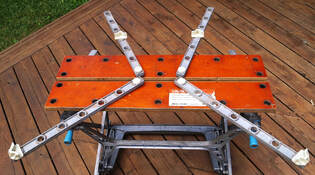
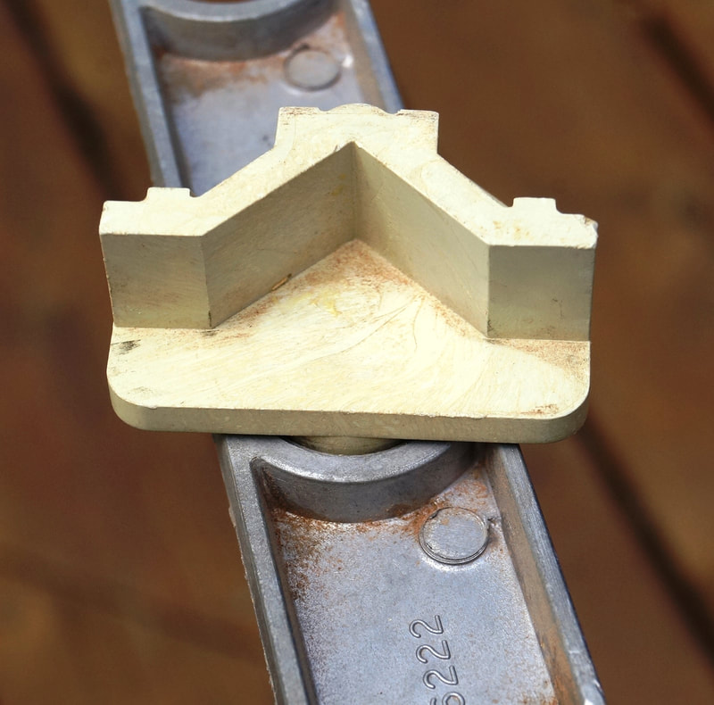
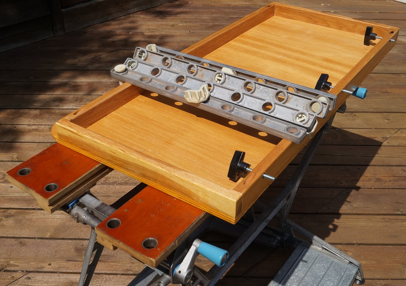
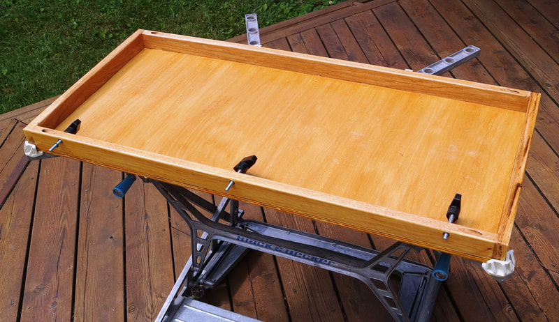
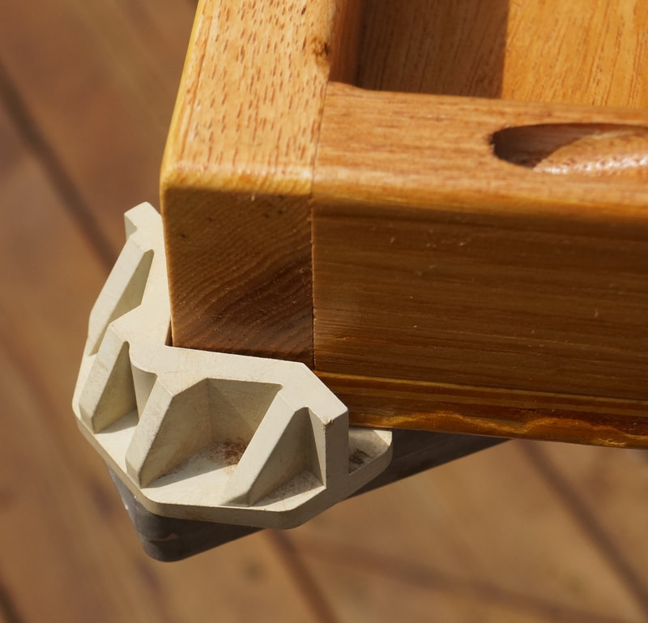
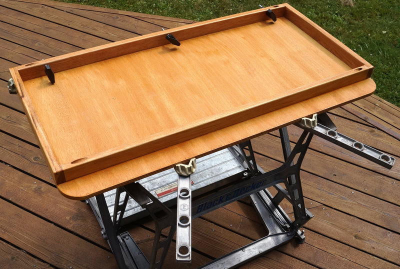

The Universal Extender Arms WM110 extend the reach of the swivel pegs beyond the dimensions of the jaws, allowing you to clamp flat objects that are too large to be held by the Workmate alone. The WM110 was a UK-market accessory introduced in October 1974 for the Workmate WM225, WM325, and WM525. They were never sold in the U.S. but they fit the 79-001 and other North American Workmates just fine. The instruction manual for the WM110 is available on the Documents page.
The WM110 consists of four identical 18" cast aluminum bars with seven equally spaced 20mm holes. Each arm has a round plastic peg that passes through it to secure it into one of the holes in a jaw of the Workmate, allowing the arm to pivot as needed. Each arm also has a swivel peg that inserts into the arm. The swivel peg is unique to these arms and it has a both a flat clamping surface and a 90-degree recess to clamp a corner. These pegs can also be used in the jaws of the Workmate, but their posts are not as long as those of the standard swivel pegs.
The extender arms will hold a rectangular sheet of wood up to 3 feet by 6 feet by its corners. This can be a work piece or it can simply be a table top or work surface, for light-duty work only. The arms can also clamp other large work pieces of various shapes in the same way as the standard swivel pegs. The maximum clamping width is 44-1/2".
Workmate 79-001 Accessories
Universal Extender Arms WM110











